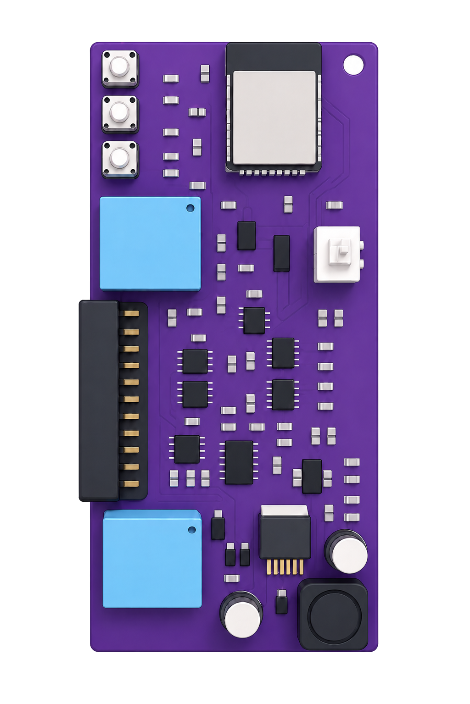

La ficha técnica dice qué tiene el equipo. Esta guía dice qué hace, funcionalidad por funcionalidad, y cada entrada responde tres preguntas y nada más: qué hace, a partir de qué entradas, y qué entrega. No explica cómo se pide ninguna de estas cosas — para eso está GC-MC-2026 · Guía del Configurador. Todo lo que sigue se calcula a bordo: el gateway recibe el resultado, no la materia prima.

Dos buses CAN, cuatro puertos serie, 1-Wire, la entrada física y el AVL.
Cada señal a su unidad real y con su nombre. Desde ahí, todas valen lo mismo.
Al gateway que ya tienes, en el formato que espera.
La consecuencia práctica: no cambias de plataforma. MetriCAN no reemplaza tu AVL ni tu sistema de flota — les entrega datos que antes no tenían, ya procesados, por el mismo puerto serie que ya usan.
Todo lo que entra al equipo —el bus del vehículo, una cámara, una báscula por cable serie, una sonda de temperatura, la entrada de ignición— se convierte en una variable del sistema, con su nombre y su unidad. Y a partir de ahí todas sirven para lo mismo, sin que importe por dónde entraron: viajar en la trama, disparar un reporte, accionar un relé, alimentar un cálculo. Ése es el flujo general, y es lo que hace que agregar un periférico no sea agregar un caso especial.
Todo lo que viene después en esta guía se alimenta de alguna de éstas.
| Entrada | Qué es físicamente |
|---|---|
| CAN 1 · CAN 2 | Dos buses CAN independientes, cada uno con su velocidad |
| UART 1 a 4 | Cuatro puertos serie, cada uno con su velocidad y su rol |
| Entrada física | Una línea digital, típicamente la ignición del vehículo |
| 1-Wire | Un bus de un hilo: llaves iButton, sondas de temperatura, interruptores |
| WiFi | Canal de gestión: consultar estado, configurar y actualizar firmware a distancia. No lleva telemetría |
| Bluetooth (BLE) | Para hablar con un teléfono o un notebook al lado del equipo |
| USB | El cable de servicio |
Lo que entra por cualquiera de estas vías deja de ser «el dato de un periférico» y pasa a ser una variable del sistema, igual que cualquier señal del bus del vehículo. El peso de una báscula y las revoluciones del motor se usan igual: las dos pueden ir en la trama, disparar un reporte, accionar un relé o entrar en un cálculo.
| Salida | Qué es |
|---|---|
| Trama de telemetría | Una línea de texto por el puerto serie elegido, hacia el módem |
| Eventos | Líneas sueltas cuando pasa algo, no cada cierto tiempo |
| Dos relés | RELAY_1 y RELAY_2, contactos secos |
| Plataforma | La telemetría que reenvía el módem |
Lo que el equipo trae de fábrica es el piso; las traducciones que le cargas tú son el techo. Las dos cosas se leen por el mismo camino y se entregan igual.
| Funcionalidad | Qué hace, y a partir de qué | Qué entrega |
|---|---|---|
| Telemetría del bus CAN | Escucha el bus del vehículo y extrae las variables que interesan —revoluciones, velocidad, temperaturas, combustible, marcha, frenos, puertas, presiones— a partir del mapa de señales de ese vehículo. | Una trama a intervalo fijo, en unidades de ingeniería y en orden fijo. |
| Segundo bus CAN | Lee una segunda red con su propia velocidad y su propio mapa: muchos vehículos llevan motor y transmisión en una, y chasis o carrocería en otra. | Una trama propia, o las dos redes en una sola trama. Es decisión de la configuración, y cambia el ancho de lo que recibe la plataforma. |
| Consulta activa (OBD-II / J1939) | Para vehículos que no publican solos lo que interesa: el equipo pregunta y espera la respuesta, con un bus en modo consulta y la lista de qué pedir y cada cuánto. | Las respuestas decodificadas, como variables más, en la misma trama. |
| Traducción de estados a texto | Muchas señales no son números sino estados —marcha puesta, freno de mano, puertas, estado de carga—, y el mapa del vehículo trae su tabla. | La palabra: N, D4, R2, ON, OFF. Si J1939 marca el valor como no disponible o error, el campo va vacío. |
| Diagnóstico del bus | Mira el tráfico de los dos buses: tramas por segundo, identificadores que no casan con ninguna señal configurada, pérdidas por desborde y errores de la capa física. | El estado de cada bus y la cuenta de lo que se pierde, separando dos cosas que se confunden: el equipo no da abasto y el cable está mal. |
El equipo sale sabiendo leer J1939, el estándar de los vehículos pesados: con la configuración de fábrica ya entrega revoluciones, velocidad, temperaturas, combustible y el resto de lo que ese estándar define, sin que nadie traduzca nada.
Pero el mayor potencial aparece cuando se le cargan traducciones propias. Lo que cada fabricante publica fuera del estándar —el estado de carga de un eléctrico, la temperatura de cada celda, el nivel de un estanque, una señal de un carrozado— no está en J1939 y no hay catálogo que lo cubra: se levanta del vehículo, se escribe como traducción propia y el equipo pasa a entregarlo igual que lo estándar. Dos equipos con el mismo firmware y traducciones distintas son dos productos distintos.
Una variable que no llegó, o que llegó hace demasiado, sale como campo vacío, no como cero: el sitio nunca desaparece, y por eso quien recibe puede leer por posición. Un cero es una medición; un vacío es la ausencia de medición.
La cámara ADAS va por bus CAN. Los demás van por puerto serie, y los cuatro puertos son intercambiables: cada uno puede llevar cualquiera de esos roles.
| Funcionalidad | Qué hace, y a partir de qué | Qué entrega |
|---|---|---|
| Cámara ADAS Mobileye | Convierte las alertas de la cámara que mira a la carretera —frenada inminente, salida de carril, peatón, distancia al de delante, exceso sobre la señal de tránsito— en eventos de la plataforma. Va por bus CAN: la cámara publica con el protocolo Mobileye Standard CAN Output y el equipo pone uno de sus dos buses en modo Mobileye para escucharla. No va por puerto serie. | Un evento por suceso: si varias alertas de la misma familia llegan juntas, entrega sólo la más específica. Y avisa aparte cuando la cámara deja de responder, que es una falla de instalación y no un evento de conducción. |
| Cámara de fatiga MR830 (DSM) | Convierte las alarmas de la cámara que mira al conductor —fatiga, distracción, bostezo, teléfono, fumar, cinturón, cambio y ausencia de conductor— en eventos. | Un evento por alarma, con dos velocidades desde v2.8.0: la que declara la cámara y la que el equipo lee del bus, para contrastarlas. Tiene enfriamiento, así que una alarma sostenida no produce una avalancha. |
| Pasarela Inventure / GWC | Cuando el vehículo ya lleva una pasarela de telemetría instalada, lee de ella los datos del motor en vez de decodificar el bus directamente. Por puerto serie o por CAN. | Más de un centenar de variables del motor —combustible, kilómetros, temperatura, revoluciones— publicadas como variables propias del equipo. |
| Modbus RTU por RS485 | Lee registros de un aparato externo que habla Modbus —un display, un sensor, un medidor— a partir de la lista de registros a leer. | Cada registro convertido a variable. Y además puede escribir en el aparato: es lo que permite mostrar un número en un display externo. |
| Bus J1708 / J1587 | Lee el bus de vehículos de flota antiguos que no publican sus datos en el CAN, a partir de la lista de MID y PID a escuchar. | Revoluciones, velocidad, temperatura y odómetro decodificados como variables. |
Ninguno de estos periféricos entrega «su dato» por un camino aparte: lo que leen entra al flujo general como una variable más del sistema. Desde ahí sirve para lo mismo que una señal del motor — viajar en la trama, disparar un reporte, accionar un relé, alimentar un cálculo.
| Funcionalidad | Qué hace, y a partir de qué | Qué entrega |
|---|---|---|
| Módem AVL Queclink | Toma del módem los datos de posición y estado —latitud, longitud, velocidad GNSS, rumbo, altitud, precisión, fecha y hora, zonas geográficas— y los incorpora a la telemetría del equipo. | Esas variables disponibles para la trama, para las reglas de relé y para el limitador por zona. El mapa de campos viene de la configuración, así que un modelo nuevo de módem no exige firmware nuevo. |
| Periférico serie genérico | Lee un aparato que habla por cable serie —una báscula, un caudalímetro, un lector de tarjetas— describiendo en la configuración el formato de sus mensajes. | Sus datos como variables del equipo, usables en la trama, en los eventos y en las reglas de relé igual que cualquier señal del bus. Sin pedir una versión nueva de firmware. |
| Puente transparente | Conecta dos puertos serie y deja pasar lo que entra por uno hacia el otro, sin interpretarlo. | El mismo flujo, intacto. Sirve para hablarle a un aparato que está detrás del equipo. |
| Estado de los puertos | Dice, para cada uno de los cuatro puertos, a qué velocidad está, qué rol tiene, cuántos bytes han entrado y cuánto tiempo lleva callado. | El dato que separa el aparato no está conectado de está conectado y hablamos a velocidades distintas, que desde fuera se ven igual: silencio. |
Los roles no compiten entre sí: con cuatro puertos serie, el límite práctico es cuántos aparatos hay que atender, no cuáles son compatibles.
| Funcionalidad | Qué hace, y a partir de qué | Qué entrega |
|---|---|---|
| Ignición por entrada física | Sabe si el vehículo está encendido mirando una línea eléctrica cableada a la llave de contacto. Si no está cableada, el equipo también puede deducir la ignición de una señal del bus. | El estado de ignición como variable, y el corte de emisión cuando está apagada. Sin esto, un camión detenido sigue mandando tramas toda la noche, y eso se paga en datos y en batería. |
| Identificación del conductor por iButton | Lee la llave del conductor en el bus 1-Wire, de modo que cada viaje queda asociado a una persona. | Un evento con el código de la llave al presentarla, y la identidad como variable mientras dure. Puede exigir confirmación y accionar el zumbador para avisar al conductor de que debe identificarse. |
| Sondas de temperatura y contactos 1-Wire | Lee sondas de temperatura y contactos conectados al mismo bus de un hilo. | Cada sonda como variable con su nombre. Sirve para cámaras de frío, compartimentos y puertas. |
Telemetría del bus, variables calculadas y avisos de la cámara se cortan por separado, porque el costo de equivocarse es distinto en cada uno: callar un bus deja el equipo mudo; callar un aviso de cámara sólo pierde ese aviso.
Estas variables viajan en su propia trama y sobreviven a los cortes de energía. Son las que convierten telemetría en información de gestión.
| Funcionalidad | Qué hace, y a partir de qué | Qué entrega |
|---|---|---|
| Horómetros | Cuenta tiempo bajo condición sobre señales del vehículo y, si hace falta, una segunda condición encadenada: motor girando y vehículo detenido es el ralentí. | Horas de motor, de viaje y de ralentí, con reinicio por ciclo si se quiere. Se inhibe solo cuando el vehículo ya publica su horómetro. |
| Consumo de combustible | Integra en el tiempo el caudal instantáneo del motor, en litros por hora. | Litros acumulados en total y en ralentí — que es el consumo que se puede atacar. |
| Odómetro propio | Integra la velocidad del vehículo por tiempo. | Kilómetros acumulados aunque el vehículo no publique su cuentakilómetros. Admite que se le ponga el valor del tablero para arrancar desde ahí. |
| Contadores de sucesos | Cuenta cruces de umbral con flanco sobre cualquier variable del equipo. | Cuántas veces se abrió una puerta, conmutó un relé o se cruzó un límite. |
| Variables derivadas | Combina dos o más variables existentes con una operación aritmética. | El resultado como una variable más, con su nombre y su unidad. |
| Energía y carga en vehículos eléctricos | Mide el ciclo de carga a partir del estado de carga, la tensión y la corriente del bus. | El evento de carga con su energía, y el aislamiento del resto de las cuentas: lo que entra por el enchufe no se confunde con lo que devuelve el freno regenerativo. |
| Juegos por tipo de vehículo | Trae listos los juegos de variables calculadas de cada tipo: combustión, eléctrico e híbrido. | El conjunto completo de ese tipo, cada variable con su cálculo y sus condiciones, sin definirlas una por una. |
| Funcionalidad | Qué hace, y a partir de qué | Qué entrega |
|---|---|---|
| Relés por regla | Acciona dos contactos secos cuando se cumple una condición medida sobre cualquier variable del equipo: del bus, de un periférico, de la entrada física o calculada. | El contacto conmutado, con histéresis para que no vibre en el umbral, y el estado real del relé como variable — que es distinto de la orden dada: un relé puede recibir la orden y no conmutar. |
| Limitador de velocidad por zona | Impide que el vehículo supere cierta velocidad dentro de un recinto —una faena, un patio, una planta— cruzando las zonas que reporta el módem con la velocidad del vehículo. | El relé accionado mientras se excede el límite de esa zona, con margen de liberación para que no oscile en el borde. Cada zona lleva su límite y hay uno por defecto fuera de todas. Opcionalmente muestra el límite vigente en un display. |
| Zumbador de identificación | Avisa al conductor de que debe presentar su llave, a partir del estado de la ignición o del motor y del lector de llaves. | Un pitido intermitente por uno de los relés, y el silencio al identificarse. |
| Situación | Respuesta del equipo |
|---|---|
| Una actualización se corta | Arranca con la versión anterior en vez de quedar inutilizado |
| Llega un firmware ajeno | El paquete está firmado: un archivo alterado o de otra línea de equipo se rechaza antes de escribir nada |
| Se corta la alimentación | La configuración y las variables calculadas sobreviven al corte |
| El bus deja de responder | Las variables quedan como campo vacío, y el diagnóstico del bus dice si es desborde o capa física |
| No pasa nada hace horas | El latido de salud distingue un equipo callado porque no pasa nada de uno callado porque está muerto |
| Funcionalidad | Qué hace, y a partir de qué | Qué entrega |
|---|---|---|
| Trama de telemetría | Publica todas las variables del vehículo juntas, a intervalo fijo, por el puerto serie que va al módem. | Una línea con un encabezado que identifica la configuración y los campos en orden fijo. |
| Emisión por suceso | Además del intervalo fijo, emite en el momento en que cambia una señal marcada como relevante — una marcha, un freno de mano, una puerta. | Una trama inmediata, con antirrebote para que un contacto sucio no produzca una ráfaga. |
| Trama de variables calculadas | Publica aparte el bloque de horómetros, consumos y odómetro. | Su propia trama, con su propio intervalo y su propio encabezado. |
| Canal de gestión por WiFi | El equipo se conecta a una red WiFi para que se le pueda consultar el estado, cambiar la configuración y actualizar el firmware a distancia, a partir de las credenciales de la red y la dirección del servicio. | El estado del equipo y la vía para configurarlo y actualizarlo en remoto, sin que nadie vaya hasta él con un cable. |
| Latido de salud | Dice cada cierto tiempo que sigue vivo y en qué estado está, aunque no haya pasado nada. | Una línea de estado a intervalo configurable, una hora por defecto. |
| Diagnóstico en vivo | Muestra el valor actual de cada variable del equipo, con su antigüedad. | La foto completa: qué se está leyendo, qué está rancio y qué nunca llegó. Es la primera pregunta de toda instalación y de todo reclamo. |
Los datos del vehículo salen por su camino de siempre —la trama al módem— y no pasan por el WiFi. Ese canal es para administrar el equipo: consultarlo, configurarlo y actualizarlo a distancia. No es una segunda vía de telemetría.
| Funcionalidad | Qué hace, y a partir de qué | Qué entrega |
|---|---|---|
| Configuración del vehículo | Define qué equipo es: qué señales lee, cómo se llaman, qué periféricos tiene, qué reglas de relé aplica y cada cuánto emite. | Un equipo genérico convertido en el equipo de ese vehículo. La configuración sobrevive a los cortes de energía y a las actualizaciones: actualizar el programa no borra la configuración. |
| Actualización de firmware en el equipo instalado | Pone una versión nueva del programa sin abrir el equipo, sin desmontarlo del vehículo y sin interrumpir su funcionamiento mientras se transfiere. El paquete firmado entra por el cable de servicio o por Bluetooth, lo que sea más cómodo según dónde haya quedado instalado el equipo. Por Bluetooth hace falta un Configurador con credencial de operador (ver Acceso por Bluetooth). | El equipo con la versión nueva, y la vuelta atrás automática si la carga se corta a mitad. |
| Actualización remota | El equipo instalado pregunta por su cuenta a la plataforma, por WiFi, si hay firmware o configuración nueva. | El equipo al día sin que nadie vaya con un cable. No hay que buscarlo: es él quien pregunta. |
| Conexión sin cable | Permite hablarle al equipo desde un teléfono o un notebook por Bluetooth, cuando llegar al conector es incómodo. Es la misma consola que por cable, no una versión reducida: por aquí se consulta y también se configura. | Consulta y configuración sin desmontar nada. Todo lo que escribe —cambiar configuración, leer ficheros, lanzar una actualización— exige credencial de operador; lo que sólo consulta, no. El equipo se anuncia a intervalo regulable: subirlo baja el consumo y tarda algo más en aparecer en el teléfono. |
| Control de acceso | Decide quién puede cambiar la configuración de un equipo instalado. La barrera depende de por dónde se entre: por radio, credencial de operador; por el cable de servicio, el acceso físico al equipo. | Un equipo que no se reconfigura por Bluetooth sin credencial, y cuya configuración por cable exige tener el equipo delante. Las versiones selladas van además con arranque verificado y memoria cifrada. |
| Identificación del equipo | Responde qué versión de firmware lleva, qué configuración tiene cargada y cuánto tiempo lleva encendido. | Lo que separa lo que debería tener cargado de lo que tiene cargado, y hay que tenerlo antes de diagnosticar cualquier otra cosa. |
El detalle de las campañas remotas está en OT-MC-2026 · Campañas OTA; el paso a paso de la herramienta, en GC-MC-2026 · Guía del Configurador.
Las variables calculadas se definen por configuración, no por firmware. Cuéntanos qué dato necesitas y evaluamos si sale de las señales que tu flota ya tiene en el bus.